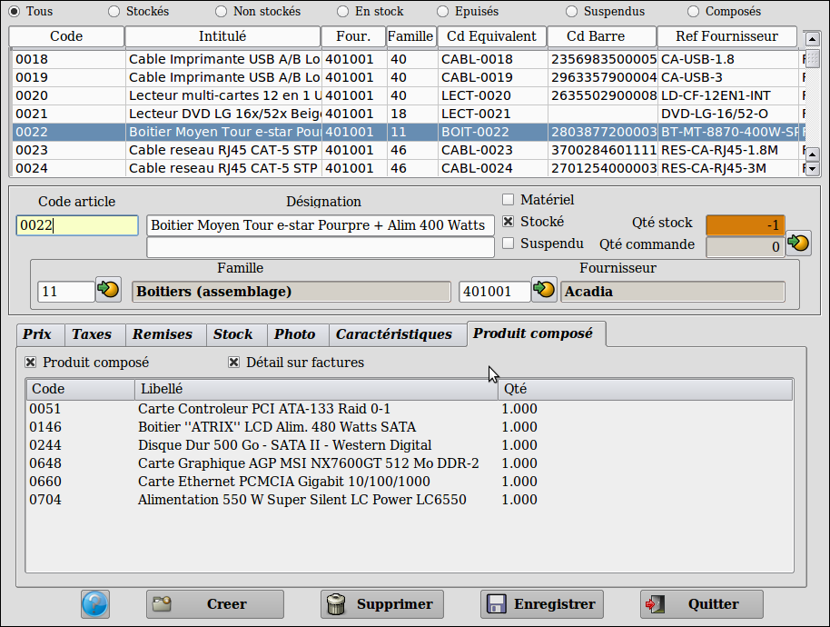
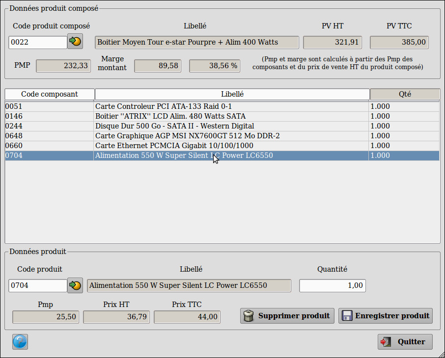
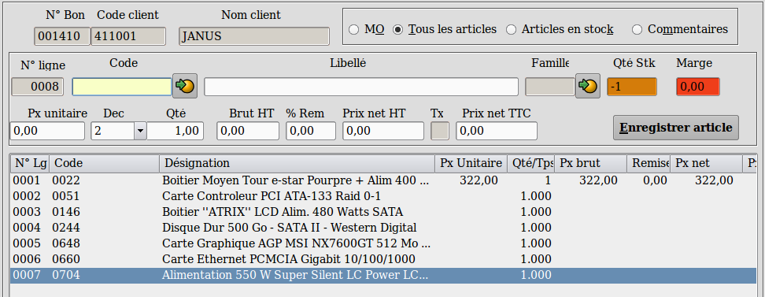

~ Comptabilité et Facturation Laurux ~

~ Comptabilité et Facturation Laurux ~ |
|
|
|

En
premier, il faudra créer les produits composés par la table des
articles et surtout ne pas oublier de cocher le bouton "Produit composé".
Le bouton "Détail
sur facture" permet (ou pas) l'impression des composants sur les
documents clients. Les composants n'apparaissent dans les fiches des
produits composés qu'après saisie par la table des produits composés.

L'option "Produits composés" du menu "Tables" va permettre de saisir les composants inclus dans chaque produit composé crée par la table des articles.
En premier on va saisir le produit composé,
soit en tapant le code soit en cliquant sur le bouton de recherche. Le
bouton de recherche n'affiche que les articles ayant le bouton "Produit
composé" coché.
Ensuite, dans la partie basse de l'écran on va
saisir l'ensemble des articles composants le produit sélectionné ainsi
que la quantité utilisée.
Chaque enregistrement de composant va provoquer le calcul du PMP à
partir du PMP de chaque composant. La marge en valeur et en pourcentage
du produit composé est calculée à partir de ce PMP et du prix de vente
du produit composé.
Les zones PbHT, PaHT et PaHT en UV de la fiche du produit composé
seront mis à jour.

La saisie des produits par le menu de la "Facturation"
s'effectue de la même manière que pour un article normal. l'ensemble
des composants utilisés s'affichera à l'écran avec la quantité utilisée
pour chaque composant.
Le détail des composants s'affichera à l'écran (voir
ci-dessus) même si le bouton "Détail sur factures"
n'est pas coché dans la fiche du produit composé, cependant il sera
nécéssaire de l'activer si on souhaite faire apparaitre ce détail sur
l'impression (voir ci-dessous).
----------------------------------------------------------------------------------------------------------------------